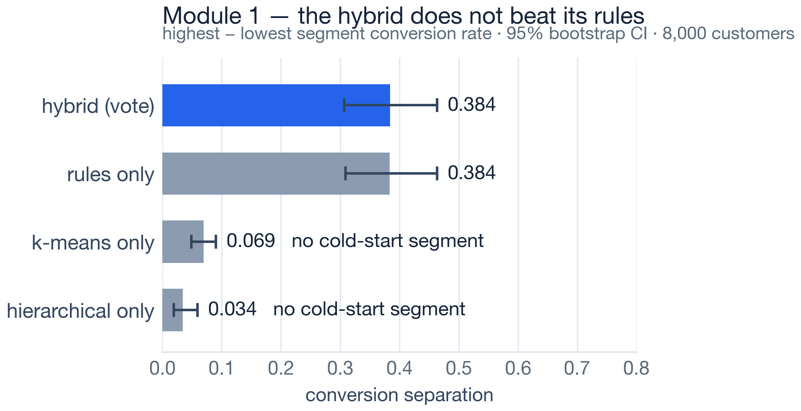
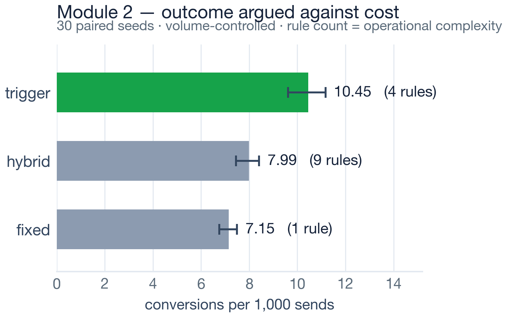
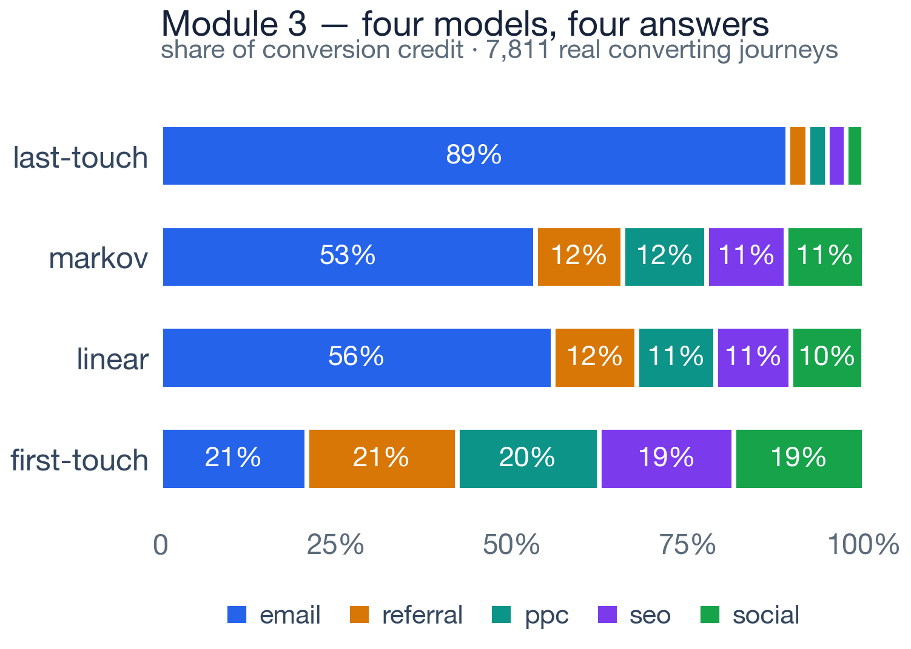
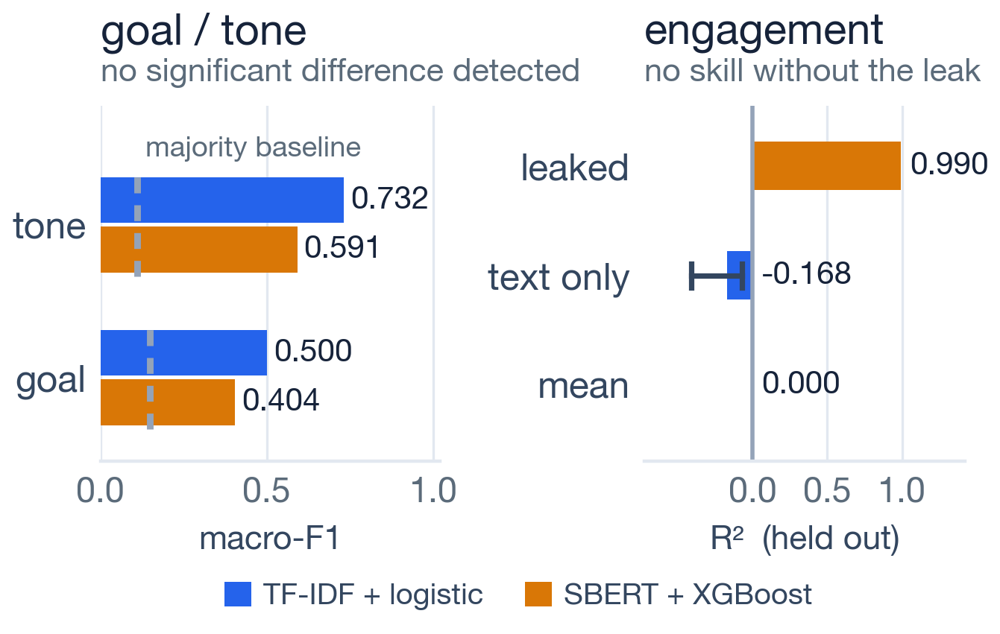

To design, implement and experimentally evaluate an integrated, closed-loop AI marketing framework unifying segmentation, automation, attribution-aware analytics and content refinement — effective under cold start, and whose every reported claim is reproducible from the system itself.
The loop closes twice — once through analytics feedback into segmentation, automation and content, and once through the propensity-logged decision record, which is what makes the policy itself evaluable. The system is an advisor, not a sender: it hands over an Action Plan a company executes in its own tools.
This module segments a cold-start audience by combining a rule-based segmenter with k-means and Ward-linkage hierarchical clustering over one feature matrix. An agreement vote across the three yields both a segment and a calibrated confidence, and preserves a New Cold User segment that clustering alone cannot represent.

Separation 0.3838 (hybrid) against 0.3837 (rules alone); k-means 0.069, hierarchical 0.034. A negative result, reported as the headline — the clustering contributes nothing to separation, and the hybrid earns its place on calibrated confidence and explicit cold start instead.
Three campaign policies — fixed workflow, behavioural trigger and hybrid — run behind a single policy engine that is the only component differing between arms. Thirty paired seeds put the same 8 000 customers through all three, so any measured difference is attributable to the policy alone.

Trigger 10.45 against fixed 7.15 — paired difference +3.299 [3.146, 3.447], Wilcoxon p = 1.9 × 10⁻⁹, Cliff’s δ = 1.0, bought with three extra decision rules. The live build ranks the policies differently, and that instability is the result.
Funnel analytics, four attribution models, conversion and drop-off prediction, uplift modelling and off-policy evaluation over an append-only decision log. The module turns description into a recommendation — and then makes that recommendation evaluable from the system’s own logs.

The four models disagree over 68% of all attributed credit across 7 811 journeys — last-touch credits email 89%, first-touch spreads it evenly. The disagreement is the finding, not a defect in one model.
The client’s own site becomes platform-specific assets — classified for goal and tone, scored on meaning, platform fit and engagement, and checked against what the site can actually do.

TF-IDF + logistic reached higher macro-F1 than SBERT + XGBoost on goal (0.500 vs 0.404, against a 0.148 majority baseline) and tone (0.732 vs 0.591) — accuracy 0.772 and 0.818. Exact McNemar found no significant difference in errors (p = 1.000 and 0.727), which is not proof they are equal; TF-IDF is deployed for both, for cost and interpretability. Removing the leaked outcome columns drops engagement from R² 0.990 to −0.168, with 0 of 8 text features surviving Holm–Bonferroni; its weight was cut 0.45 → 0.20. Capability detection matches hand labels 21 / 21 on a development set.
Preliminary: the held-out sets are small, so these comparisons are underpowered; larger human-reviewed platform-labelled data is needed.
This research delivers an integrated, closed-loop AI marketing framework in which segmentation, automation, analytics and content generation operate over one audience, with feedback, under cold-start conditions. Eleven experiments are reproducible with a single command, and every table and figure is regenerated from the results they write.
Four findings stand on their own: a hybrid must be measured against its own components; accuracy is not what a leak corrupts (0.0013 of accuracy, 150× of certainty, every test green); attribution models disagree enough to reverse a spending decision; and a recommender ranking by predicted response answers a different question — so the system logs propensities and explores on purpose. Stability is not correctness.
Seven defects were found in the team’s own research code — a leaked confidence model, a cold-start segment deleted by its own vote, an engagement regressor trained on its own target. Every one made a result look better than it was, and none produced an error message. That is why provenance is derived at write time, propensity is a mandatory column, and there is one regression test per defect.
Not supported by the evidence: that the hybrid separates conversion better than rules alone; that any one automation policy is best; that engagement is predictable from caption text on this corpus. Event ordering is reconstructed, and campaign response is modelled in both simulator and live build.